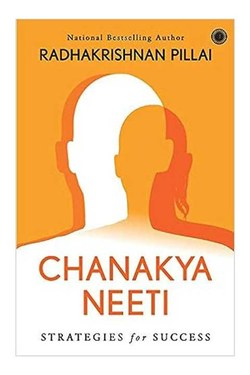

Library › Power & Strategy
Chanakya Neeti — Summary & Key Lessons

2,300-year-old wisdom on power, people and self-rule — from the man who built an empire.
📖 OPEN THE FULL INTERACTIVE BREAKDOWN →🌐 Read it in Hindi, Hinglish, Gujarati, Tamil & 22 more languages — free, with audio.
💡 The Big Idea
Chanakya (Kautilya) was the strategist who crowned Chandragupta Maurya. His neeti is not moralising — it is engineering: treat your body, mind, wealth and relationships as systems you can design. Every crisis is a design problem; every person has a predictable pattern. The book's discipline is unglamorous: sleep early, plan every morning, keep accounts, watch your words, and never confuse kindness with weakness.
🧠 The 10 Key Lessons
Lesson 1: Rule Yourself Before You Rule Anything
Chapter 1: The First Enemy Is You
Chanakya's first sutra is self-discipline: rise early, keep a clean body and mind, and control the senses. A leader who cannot command his own sleep, temper and appetites will be commanded by everyone else. Time is the only truly non-renewable resource — the book treats wasted mornings as capital loss.
📖 Example: A founder who plans his day by 7 am, keeps accounts every night and walks daily moves like a king; the one who drifts wakes up serving everyone's crises. Read the full example →
⚡ Do this: Set one fixed morning ritual (wake time, plan, one hard task) and keep a single daily account of how you spent time and money.
Lesson 2: Money: Earn, Protect, Multiply
Chapter 2: The Science of Wealth
Chanakya treats wealth as infrastructure: earn honestly, protect it fiercely, and multiply it patiently. He warns against lending to the lazy, spending on show, and trusting the same account twice. A kingdom's strength (and a home's) is its treasury — but the treasury must serve the people, not the ego.
📖 Example: The Arthashastra's spies audited granaries; a modern version: one monthly review where you check savings rate, debts and one leaky subscription. Read the full example →
⚡ Do this: Create a simple 'kingdom ledger': income, savings %, one investment, one cut — reviewed every Sunday.
Lesson 3: Know the Four Kinds of People
Chapter 3: Reading People
Chanakya classifies people by their response to money, power and ease: the wise, the greedy, the loyal and the flatterer. He says to test before trusting, and to keep even friends on a system of shared interest. Praise in public, correct in private. Never share secret plans with a person who cannot keep a secret.
📖 Example: Before a big partnership, give a small real responsibility and watch: do they deliver, or do they only promise and blame? Read the full example →
⚡ Do this: For each key person in your life, note one observed pattern — deliverer, promise-maker or blamer — and adjust your trust level.
Lesson 4: Speak Less, Observe More
Chapter 4: The Power of Silence
A counsellor's power comes from restraint: the one who speaks last and least wins the negotiation. Chanakya advises never to reveal your full plan, never to boast of your intentions, and to let others reveal themselves in conversation. Information is the truest currency — guard it.
📖 Example: In a salary or price negotiation, ask questions, note numbers, pause — the other side fills the silence with their own strategy. Read the full example →
⚡ Do this: For one week, in every decision meeting, speak only after everyone else has spoken — then summarise.
Lesson 5: A Kingdom Is Its People
Chapter 5: The King's Real Duty
Chanakya's most radical idea: the ruler exists for the welfare of the ruled — 'the happiness of the king is the happiness of his subjects.' A leader's real work is systems that serve people: fair prices, quick justice, protected farmers, and punishment that is swift and certain.
📖 Example: A company where the founder takes 90% while the team starves is a kingdom with a bankrupt treasury — and the strongest empire collapses from within. Read the full example →
⚡ Do this: In one area you lead (team, family, project), make one concrete change that benefits others before you.
Lesson 6: The Six Enemies Within
Chapter 6: The Inner Foes
Chanakya lists the six vices that destroy leaders from the inside: lust (kaama), anger (krodha), greed (lobha), pride (mada), infatuation (moha) and envy (maatsarya). They operate inside the fort, so no outer enemy can compare with them. The Arthashastra's king-advice is really self-advice: the ruler who loses to his own appetites has already lost the war the enemy never had to fight.
📖 Example: Empires in the Arthashastra's world rarely fell to invaders first — they fell to rulers who drank, gambled and chased pleasure while the treasury drained and the spies reported from a decaying court. Read the full example →
⚡ Do this: Name your own number-one enemy from the six, and write one concrete fence against it.
Lesson 7: Read the Times, Not Only People
Chapter 7: The Wheel of Time
Chanakya teaches that everything moves in cycles — success, alliances, seasons of war and peace. A strategy that wins in one season fails in the next, so a wise leader first reads the times (kala) and then chooses: build when the wind is favourable, defend when it turns, retreat when it howls. Timing is not luck; it is attention to the wheel.
📖 Example: Two merchants, same goods: one expands during a festival season and contracts before the monsoon; the other does the reverse and loses the shop — the difference was not skill but the reading of the… Read the full example →
⚡ Do this: Before your next big move, write one line: what season is this for me — build, defend or retreat?
Lesson 8: Timing Is the Mother of Victory
Chapter 7: Opportunity (Kala)
Chanakya treats time as a weapon: a plan is only a plan until the season ripens. The fruit that is plucked early is sour; the battle won early is lost later. His rule for action: study the season, watch the signs, then strike — with full force, at the right moment. Most failures are not failures of strategy but of timing: the right move made one season too soon, or one season too late.
📖 Example: Chanakya did not march on the Nanda empire when he was insulted; he spent years building an alliance, waiting for the kingdom's internal rot to peak. When he finally moved, it collapsed quickly. Read the full example →
⚡ Do this: Before your next big move, answer one question: what does THIS season reward? If nothing, wait — prepare instead.
Lesson 9: Keep Your Plans in the Vault
Chapter 8: Secrecy
A plan is a living thing; talk drains it. Chanakya is blunt: the man who announces his intention hands his enemy the map. Even well-wishers can leak through carelessness or through love. Statecraft and career-building share the rule — the fewer people who know the full plan, the fewer who can ruin it. Secrecy is not dishonesty; it is protecting a fragile thing until it is strong enough to survive light.
📖 Example: Chandragupta's rise was organised in whispers — allies, spies and soldiers learned their parts only when the move began, which is why no rival could pre-empt it. Read the full example →
⚡ Do this: Pick one goal and tell no one for 30 days. Work in silence; let the result make the announcement.
Lesson 10: Danda: The Art of Proportionate Force
Chapter 9: Punishment and Order
Chanakya's danda (the rod of consequence) is misunderstood as cruelty. His actual teaching is precise: without some threat of consequence, order rots; but with excessive punishment, fear breeds revolt. The king should punish like a father — correcting, not crushing — and always in proportion to the offence. Order survives on predictable, proportionate consequence, not on terror.
📖 Example: A kingdom that beheads a thief loses more than a kingdom that fines and reforms him; the court that punishes capriciously teaches people that rules are a lottery. Read the full example →
⚡ Do this: Wherever you hold authority, define the consequence BEFORE the offence and make it match the size of the mistake.
✅ 5-Step Action Plan
- Write your own three-rule morning constitution (wake, plan, one hard task).
- Open a weekly ledger: money in/out, time wasted, one promise kept.
- Map the four types around you — and adjust trust accordingly.
- Practice one silence: before every decision, let others speak first.
- Review your week every Sunday for 10 minutes: one win, one leak, one promise kept.
⚠️ When This Doesn't Work
Chanakya's world is ruthless — some advice (test people, distrust everyone, conceal intent) can make you cold and suspicious. Use the systems, but pair them with modern empathy; the goal is wise, not paranoid.
💀 The Graveyard Proves It
🐂 Harshad Mehta — The Big Bull Who Broke the Banks. Burn: ₹4,000+ crore scam Read the full case study →
💬 Best Quotes from Chanakya Neeti
- “Before you start some work, always ask yourself three questions — Why am I doing it, What the results might be, and Will I be successful.”
- “Once you start a working on something, do not be afraid of failure.”
- “A person should not be too honest. Straight trees are cut first.”
Interactive version: mark lessons as read, listen in your language, share quote cards.